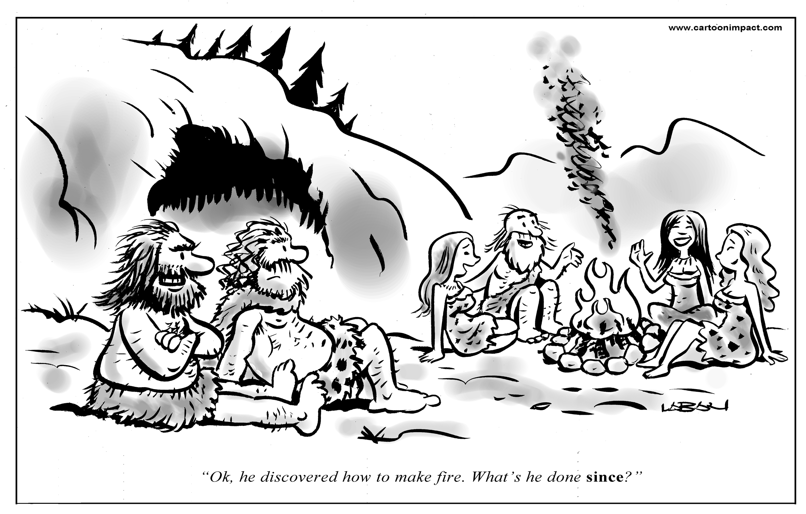

Is Steam a social network?
12 minute read time - grab a cup of tea and biscuits while you read
TL;DR
- Yes, by definitions in the literature, but the actual users are split.
- Based on questionnaire data, if you look the community features you're more likely to think of it as a social network which... You know, makes sense.
- Trust in Steam and the use of friends lists and screenshots (the ‘easiest’ to use social features) have the best correlations with thinking that Steam is social.
- Steam makes no active attempt at being perceived as a social network, but borrows design features of other networks to improve user experience in both the store and the community. More people use the store, so that's not really a surprise!
Intro
Picture the scene: creatures a couple of steps back in the evolution of humans sitting in their camp. They look like us but just a little more primal, a little closer to nature than we are now. They’re dirtier, their proportions are different, and they have significantly fewer gadgets hanging off of their bodies.
One of them stands to move to their bedding and trips, falling face first into the dust and causing ripples of loud, deep, punctuated noises from the rest of the group. Happy, simple noises as they exhale: laughter, stumbled into evolutionarily thanks to the structure of our diaphragms. Suddenly, we had this great tool for helping a social group form - yep, laughing at people falling over is socially beneficial.
All social animals need to groom, need to interact with the group to keep the group together, and if you stick to physical grooming alone you’re going to be spending most of your time going between each member of the group. As human’s social groups increased, we needed a more time efficient way of doing that and laughter was a great start, followed by early language to coordinate and interact, which then refined (slowly) into what we have today.
The most convincing reason for it, and there are many theories, is gossip. If you’re talking about other people, you’re forming and defining the barriers of a group by positive or negative reinforcement. Today, our language abilities have allowed us to shoot up from the small bands of people in our biological history, to a rough limit of around 150 now (known as ‘Dunbar’s number’).

Gah, cavemen were so catty!
Dunbar’s number has been seems to apply to Facebook too, with the average number of at least semi-regular contacts that a user has being around 150 (Dunbar, 2011). Discussing this would be a whole other article, but it does show that the digital world of social media reflects, to some degree, the physical world where we all actually interact!
The thing is though, Facebook is very explicitly a social network – so much so that a film about it was called ‘The Social Network’ – but Steam isn’t. A film about Steam is more likely to be called “Gabe’s Big Day Out’ than anything related to socialising, but that doesn’t mean that Steam isn’t social.
There are a few different types of general social network but for our purposes, Steam would likely fall into the category of a ‘Community of Interest’. As you can guess, this is simply a gathering of people united by a common interest rather than the traditional social bonds. They display the usual four aspects of a psychological sense of community (belonging, fulfilment of needs, influence, and shared connections; McMillan, and Chavis, 1986), and often the more recently-ish added fifth aspect of conscious identification (Obst, Zinkiewicz, and Smith, 2001; 2002).
I’ll talk a little about the definitions of a social network later, but that conscious identification bit is intriguing. Steam is certainly a place where people of a common interest in videogames go, but it’s not just a place for sharing that interest; a pretty huge part of it is the store, so does the mere presence of the store make people identify with the community aspect less? Do most people identify with it at all? Are the store and the community features functionally two different psychological organisms?
ALL THIS AND MORE... IMMEDIATELY!

Look... I'm not a graphic designer.
I did a research - here's my findings!
As a heads up, this is the stats heavy section and gets a bit dense near the bottom. I have tried to make it a little nicer, but feel free to jump to the next section for a summary if this bit bores the pants off of you.

And don't even get me started on fictional wind gods!